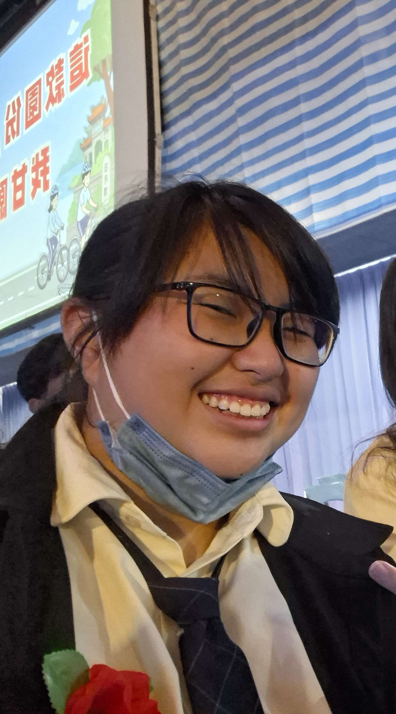
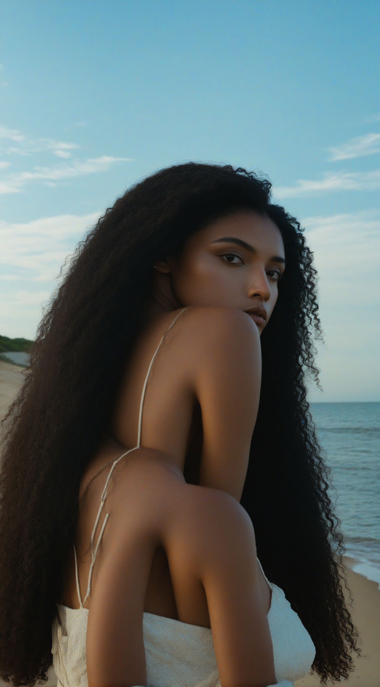
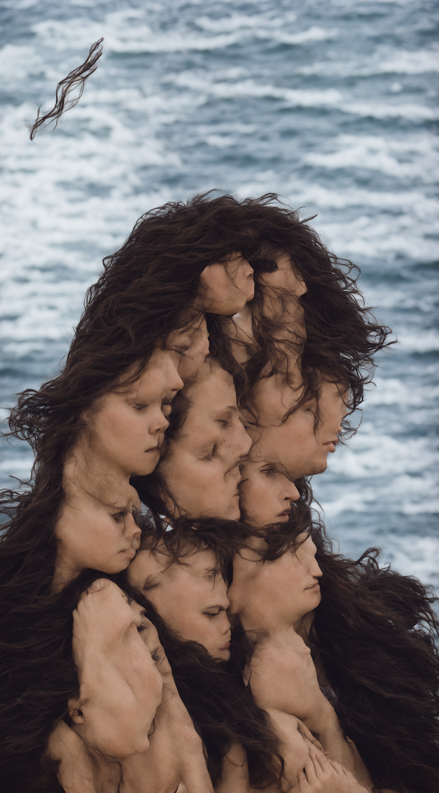

原圖

生成的圖

完整工作流截圖

正反提示詞
正面
A candid photograph of person from the original image with a completely natural, neutral, non-smiling expression,masterpiece,a natural shoreline, and a natural, expansive sky in the background. Natural outdoor lighting, shot on a 35mm lens, high-quality, cinematic, natural skin and hair textures.
負面
smiling, laughing, showing teeth, grin, joyful expression, short hair, indoor background, indoor setting, artificial studio lighting, cartoon, illustration, drawing, CGI, blurry, distorted, extra limbs, bad proportions, oversaturated, text, watermark, signature, deformed.
個人心得
好難，而且感覺做到電腦快燒起來了，還有不知道為什麼我最後變捲髮拉丁裔的樣子，不過整體還是挺好玩的，打破我對ai生圖的一些偏見，中間也生出不少掉理智值的東西。

▲像這個，根本恐怖遊戲會出現的東西。